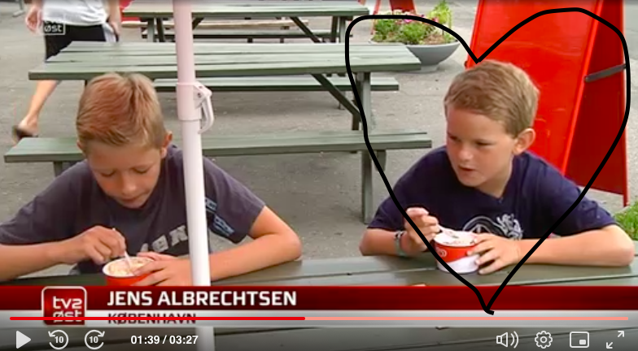

10 årig Jens vinder is kokurrence!!!

Super seje Jens Albrechtsen vinder is konkurrence på havnen i Prestø og vinder 120 kr.
Hvem vil ikke være som Jens? Med blæstvejr og korte ærmer og masser af is, vil Jens ønske han havde taget en langærmet trøje på, dog stopper Jens ikke. Efter 1 time, får Jens kæmpet sig igennem 12 iskugler og bliver den store vinder af is konkurrencen 2014!!!
Se hele videoen på linket nedenfor:
Jens spiser is
.
Lær Jens bedre at kende:
Kan Jens godt lide is?
Hvor mange penge tjente Jens den dag?
Hvad havde Jens på den dag?
Hvad gjorde Jens da han ikke kunne spise mere is?
.
Tilbage Til Start